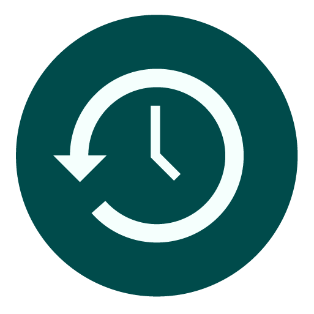

Nuestro servicio
Cursos
Cursos Regulares Niveles Básicos Intermedios y Avanzados para niños jóvenes y adultos.

Flexibilidad horaria
Acceso a diferentes alternativas horarias, diurnas y vespertinas. De Lunes a Viernes y Sábado en la mañana. Recuperación de horas y sesiones de apoyo sin costo adicional para el alumno.
Contáctanos y te ayudaremos
Material didáctico
Todo el material Didáctico a usar por el alumno esta incluido en el valor de su Matricula. Trabajamos con Textos que se renuevan anualmente, Material de Audio y Exposición a Películas, Vídeos y otros; a través de Data-show.